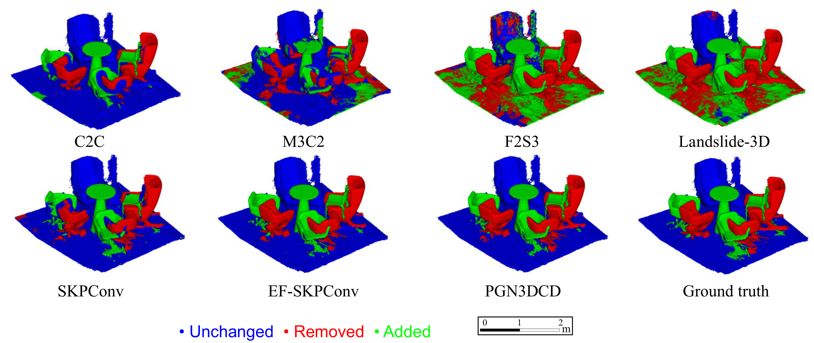
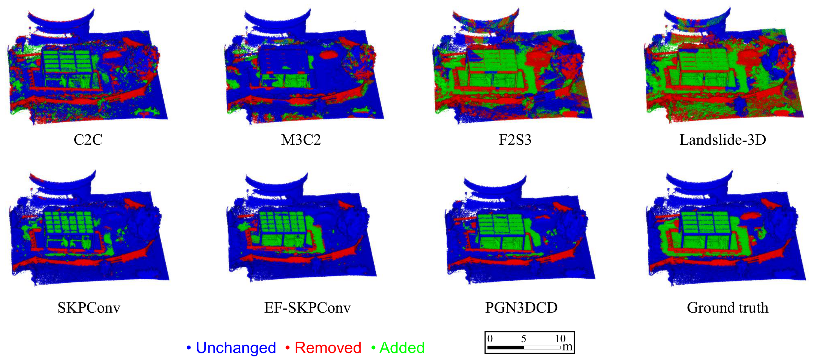
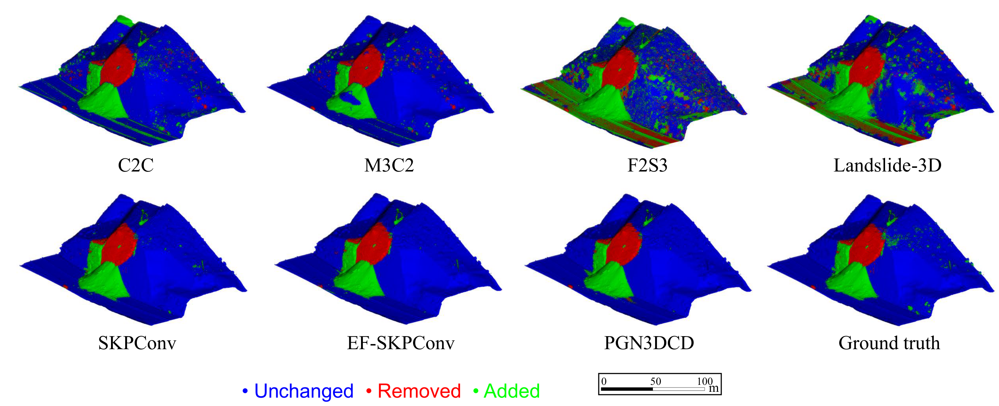

Overview
3D change detection (3DCD) is essential for monitoring infrastructure, environmental dynamics, and natural hazards. Existing algorithms are typically evaluated on single-scene datasets, and their generalization across varied real-world scenes remains largely unexplored due to the absence of a universal benchmark.
MultiChange3D provides co-registered pairs of point clouds with ground-truth geometric change labels across 10 diverse scenes captured by 5 sensor types, enabling standardized evaluation and cross-scene generalization analysis for 3DCD methods.

Representative scenes from the MultiChange3D dataset. The Bike parking construction scene is colorized by LiDAR intensity; the others by RGB values.
Explore the Data
Select a scene to interactively view the co-registered point cloud pair. Both views share the same camera — rotate, pan, and zoom in either panel.
Epoch 0
Epoch 1
Dataset Summary
| Sensor | Scene | Approx. Points | Avg. Density (m) | Epochs | Pairs | Extra Features | Condition |
|---|---|---|---|---|---|---|---|
| RGB-D | Office | 2 M | 0.002 | 4 | 6 | RGB | Indoor, cluttered |
| RGB-D | Open Space (RGB-D) | 4 M | 0.002 | 4 | 6 | RGB | Indoor, furniture changes |
| MLS | Open Space (MLS) | 200 k | 0.01 | 2 | 1 | Intensity | Indoor, furniture changes |
| MLS | Underground Car Parking | 24 M | 0.01 | 3 | 3 | Intensity | Indoor, vehicle motion |
| MLS | Bike Parking Construction | 5 M | 0.02 | 4 | 6 | Intensity | Outdoor, construction |
| MLS | Vineyard* | 5 M | 0.02 | 3 | 3 | — | Outdoor, vegetation |
| TLS | Classroom | 40 M | 0.005 | 2 | 1 | Intensity, RGB | Indoor, furniture changes |
| TLS | Meeting Room | 170 M | 0.003 | 2 | 1 | Intensity, RGB | Indoor, small-scale |
| UAV Camera | Landslide** | 20 M | 0.04 | 4 | 4 | RGB | Outdoor, natural terrain |
| Airborne Camera | City | 800 M | 0.05 | 2 | 1 | RGB | Simulated changes, urban |
| Airborne LiDAR | City | 350 M | 0.1 | 2 | 1 | Intensity, RGB | Outdoor, large-scale urban |
* No ground-truth change labels. ** Data from Lamas-Fernandez et al., 2025.
Benchmark
An initial benchmark of 7 methods from 3 categories, evaluated on three representative scenes: Open Space (RGB-D), Bike Parking Construction, and Landslide.
- Euclidean distance-based: C2C, M3C2
- 3D displacement estimation-based: F2S3, Landslide-3D
- Deep learning classification: Siamese KPConv, EF-Siamese KPConv, PGN3DCD
Same-scene evaluation (trained and tested per scene)
| Scene | Method | Precision | Recall | F1 | OA | mAcc | mIoU |
|---|---|---|---|---|---|---|---|
| Open Space (RGB-D) | C2C | 95.5 | 62.7 | 75.4 | 88.5 | 80.9 | 73.2 |
| M3C2 | 51.8 | 55.4 | 52.2 | 71.7 | 67.1 | 51.1 | |
| F2S3 | 35.8 | 99.9 | 51.7 | 46.3 | 61.5 | 29.5 | |
| Landslide-3D | 40.2 | 99.5 | 55.9 | 54.6 | 67.7 | 38.0 | |
| SKPConv | 87.5 | 72.5 | 75.6 | 90.2 | 84.0 | 76.1 | |
| EF-SKPConv | 89.0 | 94.9 | 91.4 | 95.8 | 95.6 | 89.9 | |
| PGN3DCD | 97.8 | 92.7 | 95.0 | 97.4 | 95.8 | 93.4 | |
| Bike Parking Construction | C2C | 51.5 | 50.1 | 49.7 | 78.0 | 68.2 | 54.3 |
| M3C2 | 26.3 | 43.6 | 32.0 | 61.5 | 55.3 | 38.3 | |
| F2S3 | 29.0 | 93.3 | 43.8 | 49.1 | 64.8 | 32.0 | |
| Landslide-3D | 28.0 | 96.7 | 43.1 | 46.0 | 64.0 | 29.4 | |
| SKPConv | 85.8 | 45.9 | 59.2 | 86.3 | 72.0 | 63.4 | |
| EF-SKPConv | 89.9 | 60.7 | 72.1 | 89.9 | 79.6 | 72.5 | |
| PGN3DCD | 94.0 | 65.3 | 76.8 | 91.5 | 82.1 | 76.2 | |
| Landslide | C2C | 85.5 | 91.9 | 88.4 | 95.6 | 94.2 | 87.2 |
| M3C2 | 83.8 | 84.6 | 84.2 | 94.5 | 90.6 | 83.1 | |
| F2S3 | 31.2 | 98.1 | 47.3 | 62.1 | 76.3 | 42.7 | |
| Landslide-3D | 37.1 | 95.8 | 53.4 | 71.0 | 80.8 | 50.9 | |
| SKPConv | 97.0 | 93.7 | 95.3 | 98.4 | 96.5 | 94.5 | |
| EF-SKPConv | 97.8 | 90.6 | 94.0 | 98.0 | 95.1 | 93.2 | |
| PGN3DCD | 96.1 | 92.4 | 94.1 | 98.0 | 95.8 | 93.3 |
Key Findings
- Deep learning methods achieve the best scores when trained and tested on the same scene.
- Cross-scene generalization remains a significant challenge for learned approaches (OA drops of 16–65 pp).
- Euclidean distance-based methods (C2C, M3C2) show stable performance across diverse scenes.
- 3D displacement estimation-based methods can detect large changes but struggle with planar structures.
Qualitative Results

Open Space (RGB-D), epoch pair 0-2.

Bike Parking Construction, epoch pair 0-2.

Landslide, epoch pair 0-1.
Download
Each scene folder contains co-registered point cloud pairs and ground-truth labels for all available epoch pairs. Point clouds are provided in .ply format.
| Scene | Sensor | Link |
|---|---|---|
| Office | RGB-D | Download |
| Open Space (RGB-D) | RGB-D | Download |
| Open Space (MLS) | MLS | Download |
| Underground Car Parking | MLS | Download |
| Bike Parking Construction | MLS | Download |
| Vineyard | MLS | Download |
| Classroom | TLS | Download |
| Meeting Room | TLS | Download |
| Landslide | UAV Camera | Download |
| City (Airborne Camera) | Airborne Camera | Download |
| City (Airborne LiDAR) | Airborne LiDAR | Download |
Citation
Accepted at ISPRS Annals of the Photogrammetry, Remote Sensing and Spatial Information Sciences, proceedings of the ISPRS Congress 2026.
License
The data is licensed under the Creative Commons Attribution-NonCommercial-ShareAlike 4.0 International License. The code is licensed under the MIT License.